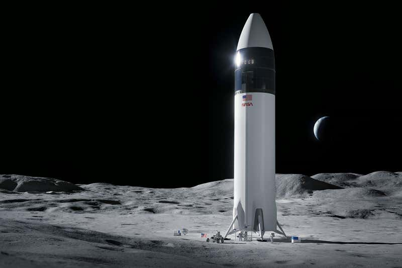

NASA has selected SpaceX to build a lander to take humans to the moon
SpaceX is going to the moon. NASA has selected the company, headed by Elon Musk, to build a lunar lander to take humans to the moon’s surface in 2024. SpaceX beat out two other US-based firms for the $2.9 billion contract: defense contractor Dynetics, and private spaceflight company Blue Origin, which had partnered with several other aerospace industry titans. The three contenders were announced in April 2020, and while NASA was expected to select two finalists – as it did with its commercial crew programme – it has only awarded SpaceX a continuing contract. SpaceX’s intended lunar lander is a modified version of Starship, the spacecraft that the company has already begun to build and test in Texas. So far, all four of the test flights have ended in the prototype craft dramatically exploding.
SpaceX is going to the moon. NASA has selected the company, headed by Elon Musk, to build a lunar lander to take humans to the moon’s surface in 2024. SpaceX beat out two other US-based firms for the $2.9 billion contract: defense contractor Dynetics, and private spaceflight company Blue Origin, which had partnered with several other aerospace industry titans. The three contenders were announced in April 2020, and while NASA was expected to select two finalists – as it did with its commercial crew programme – it has only awarded SpaceX a continuing contract. SpaceX’s intended lunar lander is a modified version of Starship, the spacecraft that the company has already begun to build and test in Texas. So far, all four of the test flights have ended in the prototype craft dramatically exploding.
NASA will not be putting astronauts aboard Starship until SpaceX has proven that it can land the spacecraft without it blowing up, not only on Earth but also with a test landing on the lunar surface. “We are not going to launch humans until we have a successful test,” said Lisa Watson-Morgan, the leader of NASA’s Human Landing System programme, during NASA’s announcement. This contract is part of NASA’s Artemis programme, intended to land humans – including the first woman and the first person of colour – on the moon for the first time since the final Apollo mission in 1972. If all goes well, NASA representatives say this could occur as soon as 2024.